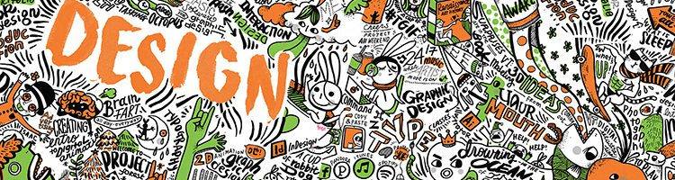

Borough of Manhattan Community College
Program: Animation & Motion Graphics
Degree: Associate of Science
The Animation and Motion Graphics program provides students with the fundamentals of two- and three-dimensional (2D and 3D) animation, motion graphics, and special effects for advertising campaigns, video games, movies, and television.
View Program

Kingsborough Community College
Program: Animation
Degree: Associate of Science
The Animation concentration is part of the Graphic Design and Illustration major. Students learn traditional, hand-drawn animation in a digital environment, as well as storyboarding and 3D animation.
View Program
Hostos Community College
Program: Digital Design & Animation
Degree: Associate of Science
Through lectures and studio-based classes the Digital Design and Animation Program provides students with a strong foundation for future occupations in motion graphics, animation, graphic design and/or web design.
View Program

Queens College
Program: Design
Degree: Bachelor of Fine Arts
Queens College’s Design program combines knowledgeable faculty with industry standard software and the creativity of a studio-based learning environment. Students choose one of three concentrations: Communication Design, Animation & Illustration or Interaction Design.
View Program
Lehman College
Program: Computer Graphic and Imaging
Degree: Bachelor of Science
The Computer Graphics and Imaging program offers courses covering web design, imaging, 3-D modeling, animation, interactivity, and broadcast design, preparing students for careers as well as graduate study in these fields.
View Program